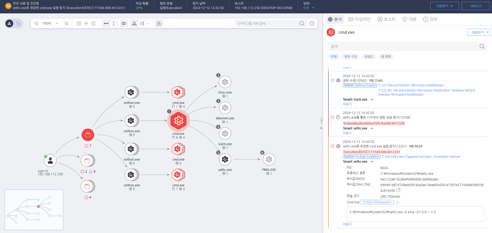

T1546.008.10 sethc.exe를 통한 cmd.exe 실행
D3FEND
MITRE ATT&CK 액션을 기준으로 대응 방안을 작성
Detection
모니터링을 통해 sethc.exe를 통한 cmd.exe 실행 행위를 확인합니다.
Detection(EDR)

https://172.18.10.125:8903/#/analysis/incident/675a7895002dc79600002d68
Response
해당 행위를 수행한 프로세스를 종료합니다.
Mitigations
AppInit DLLs 사용 제한 (M1026 - Privileged Account Management)
- AppInit DLLs 기능을 비활성화하거나 제한하여 악성 DLL이 시스템에 로드되지 않도록 설정
- 레지스트리 설정을 통해 AppInit_DLLs 키를 수정하고, 불필요한 DLL 로딩을 차단
- 관리자 권한을 최소화하여 일반 사용자 계정이 시스템 파일을 수정할 수 없도록 설정
시스템 프로세스 모니터링 및 알림 설정 (M1047 - System Logging & Monitoring)
- 레지스트리 변경 및 AppInit DLLs 변경 이벤트를 실시간으로 모니터링하고 알림을 받을 수 있도록 설정 (예: Event ID 4657)
- 프로세스 및 파일 시스템 모니터링을 통해 의심스러운 DLL 파일이 시스템 프로세스에 로드되는지 확인
- EDR/XDR 솔루션을 활용하여 AppInit DLLs 관련 활동을 모니터링하고 의심스러운 DLL 로드 이벤트를 탐지
애플리케이션 무결성 검증 (M1033 - Process Monitoring)
- 시스템 프로세스와 애플리케이션에 대한 무결성 검증을 수행하여 AppInit DLLs를 통한 변조를 탐지
- 디지털 서명을 사용하여 정상적인 DLL 파일만 시스템에서 실행되도록 설정
- 파일 무결성 검사 도구를 사용하여 시스템 파일에 대한 변조를 예방
레지스트리 보호 및 설정 변경 제한 (M1040 - Security Configurations)
- 레지스트리 권한을 제한하여 악성 사용자가 AppInit_DLLs 레지스트리 키를 수정할 수 없도록 설정
- 레지스트리 변경 모니터링을 통해 AppInit_DLLs와 같은 중요 레지스트리 키의 변화를 추적
- Windows 그룹 정책을 사용하여 AppInit DLLs 기능을 제한하고, 악성 코드의 공격 경로를 차단
보안 패치 및 업데이트 적용 (M1042 - Disable or Remove Feature or Program)
- Windows 보안 패치를 정기적으로 적용하여 AppInit DLLs 관련 취약점을 해결
- AppInit DLLs 기능을 비활성화하거나 시스템에서 불필요한 기능을 제거하여 공격 표면을 줄임
- Antivirus 및 Anti-malware 소프트웨어를 사용하여 AppInit DLLs를 통한 악성 코드를 차단
Affected Techniques
Action 실행시 함께 영향을 받는 다른 Techniqes
| ATT&CK |
| T1546.008 |
| T1222.001 |
| D3FEND |
| D3-PSA Process Spawn Analysis |
| D3-PM Platform Monitoring |
| D3-DA Dynamic Analysis |